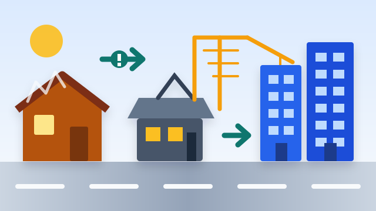

부동산
재개발 과정 8단계: 정비구역 지정부터 준공까지와 지연 리스크
정비구역 지정부터 준공까지 민간 재개발의 8단계와 단계별 지연 원인, 영상 속 장기 사례, 투자 전 확인할 위험 요소를 정리합니다.
#재개발#정비사업
11분
52개의 글

정비구역 지정부터 준공까지 민간 재개발의 8단계와 단계별 지연 원인, 영상 속 장기 사례, 투자 전 확인할 위험 요소를 정리합니다.
TV판 시즌 1~6의 공식 티니핑 이름 153개 항목과 시즌 7 방영 전 공식 공개 이름, 로미·제니·노아 등 주요 인물을 시즌별 표로 정리합니다.
rsync의 trailing slash, 주요 옵션과 로컬·SSH 백업 예제부터 --delete 안전 수칙, 제외 패턴, 스냅샷형 증분 백업과 복구 검증까지 정리합니다.
Google Play의 내부 앱 공유·내부·비공개·공개 테스트를 대상, 인원 제한, 배포 속도와 참여 방식으로 비교하고 새 개인 계정의 12명·14일 요건까지 정리합니다.
국내·해외주식과 국내·해외상장 ETF의 매도차익·배당 세금, 2026년 증권거래세, 금융소득종합과세와 ISA·연금저축·IRP의 차이를 사례로 정리합니다.
계좌송금이 증여가 되는 기준과 공동투자·대여·정산·생활비 등 증여가 아닐 수 있는 경우, 가족 간 거래의 입증자료와 신고 실무를 현행 법령·판례로 정리합니다.
Android Gradle Plugin, Gradle Wrapper, Gradle JVM, Java·Kotlin 타깃 버전의 역할과 호환 관계, 버전 충돌을 진단하고 해결하는 순서를 정리합니다.
TV판 캐치! 티니핑의 기본 구조와 로미·하츄핑의 역할, 시즌별 콘셉트, 핵심 인물과 대표 티니핑, 추천 감상 순서를 정리합니다.
2024년 극장판 사랑의 하츄핑에 등장하는 로미·하츄핑·리암·트러핑과 이름 있는 티니핑을 역할, 능력, 성우별로 한눈에 정리합니다.
베이비몬스터 7인 멤버 구성과 데뷔 과정, 음악적 특징, SHEESH·DRIP·WE GO UP·춤 등 대표곡의 감상 포인트를 정리합니다.
APE(Monkey's Audio)가 음질을 보존하는 원리와 장단점, CUE·APL의 역할, 재생 호환성, FLAC·WAV 변환 시 주의점을 쉽게 정리합니다.
SELECT·JOIN·CRUD부터 ALTER TABLE과 PostgreSQL·MySQL·SQL Server·SQLite의 nullable 변경 방법, 트랜잭션까지 핵심 SQL을 정리합니다.
검색 결과가 없습니다